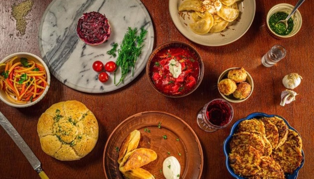

Українська кухня багата на традиції та смаки, які формувалися протягом століть. Вона відображає культуру, історію та кліматичні особливості країни. Ось кілька основних аспектів, які варто знати про українську кухню:
Українська кухня використовує велику кількість локальних інгредієнтів, таких як картопля, буряк, капуста, гриби, різні види м'яса (зокрема свинина та птиця), риба, крупи (гречка, пшениця) та молочні продукти.
Українська кухня відзначається тривалим приготуванням багатьох страв. Наприклад, борщ може варитися декілька годин, щоб досягти ідеального смаку. Багато страв готуються у печі, що додає їм особливого аромату та смаку
Українська кухня багата на святкові традиції, що відображаються у спеціальних стравах. Наприклад, на Різдво готують кутю, узвар, вареники з капустою та грибами. На Великдень – паски, писанки, ковбаси та інші м'ясні страви.
 Догори
Догори
Різні регіони України мають свої кулінарні особливості. Наприклад, в Західній Україні популярні страви з грибів та молочних продуктів, тоді як на сході більше уваги приділяють м'ясним стравам. Українська кухня – це багатий світ смаків та ароматів, який варто досліджувати та насолоджуватися. Вона відображає душу українського народу та його любов до смачної і ситної їжі.
Догори